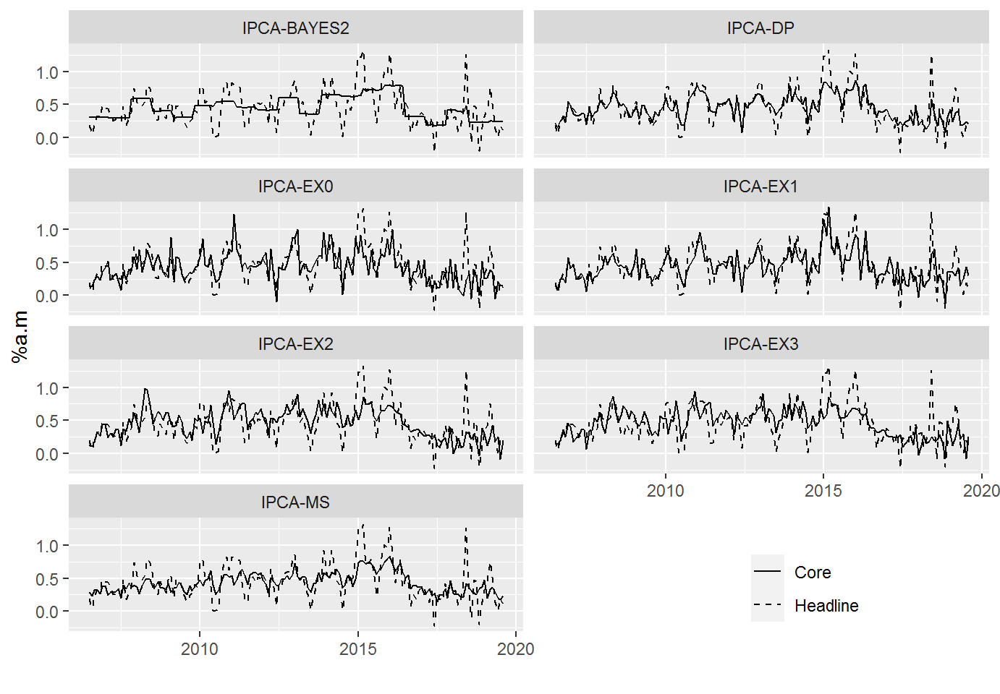

wavcoreinf.Rmdlibrary(wavcoreinf)
library(dplyr)
library(tidyr)
library(ggplot2)
library(tibble)
library(purrr)
library(rlang)
library(lubridate)
library(forecast)
library(ellipsis)The main goal of this vignette is to construct an example showing how a wavelet-based core inflation measure can be obtained from the wavcoreinf package. Then, this wavelet-based core inflation measure is compared with other tranditional measures. Data is the same as in the database coreinf_br. This database contains the headline inflation and core inflation measures of the Brazilian economy. The example is based on empirical Bayes thresholding on the levels of a wavelet transform method that is available in the R package EbayesThresh. Measures based on other methods can be constructed in the same way.
Getting data
n <- c(433, 11427, 16121, 27838, 27839, 11426, 4466, 16122)
x <- c("ipca", "ipcams", "ipcama", "ipcaex0", "ipcaex1", "ipcadp", "ipcaex2", "ipcaex3")
# inf <- getsgs(x, n)Creating individual time series from 2006-07-01 to 2019-08-01
lags
Setting wavelet parameters
ebthr_xform <- list(wt = c("dwt", "modwt"))
ebthr_wt <- list(
wf = c("haar", "la8"),
n.levels = 3:4
)
ebthr_ebwav <- list(
vscale = c("level", "independet"),
a = 3.83,
prior = c("laplace", "cauchy")
)
ebthr_args <- wav_args_ebthr(ebthr_xform, ebthr_wt, ebthr_ebwav)
#> Warning: `as.tibble()` is deprecated as of tibble 2.0.0.
#> Please use `as_tibble()` instead.
#> The signature and semantics have changed, see `?as_tibble`.
#> This warning is displayed once every 8 hours.
#> Call `lifecycle::last_warnings()` to see where this warning was generated.Determining prior “a” and mutating in ebthr_args$args_tbl
a <- ebthr_args$args_tbl %>%
dplyr::select(-a) %>%
purrr::pmap_dbl(~ purrr::possibly(prior_a, NULL)(
x = ipca, h = 3, k = 15, lags = pq,
interval = c(2, 4),
tol = 0.4,
wtfun = ..1,
wtfunlist = list(..2, ..3),
vscale = ..4, prior = ..5))
ebthr_args$args_tbl <- ebthr_args$args_tbl %>%
mutate(a = .env$a)Estimates wavelet core inflation and inserts a date column
Statistics for Evaluation of the wavelet core inflation, h = 3 and k = 15 only for faster computation. More realistic h and k could be 12 and 24, respectively.
ebthr_error_mean <- error_wave_summary(3, x = ebthr_args, y = ipca, lags = pq, k = 15, RMSE = TRUE)
ebthr_summary <- wcore_summary_fcast(ipca, ebthr_table, ebthr_error_mean)The best wavelet core inflation
A data frame with the best core inflation
Time series of the most appropriate wavelet core inflation
Tibble with headline inflation, traditional and wavelet core inflation
inf <- tibble(
date = time(ipca), ipca,
`IPCA-MS` = ipcams,
`IPCA-EX0` = ipcaex0,
`IPCA-EX1` = ipcaex1,
`IPCA-DP` = ipcadp,
`IPCA-EX2` = ipcaex2,
`IPCA-EX3` = ipcaex3,
# `IPCA-UNI` = uni_ts[, 2],
# `IPCA-MIN` = min_ts[, 2],
# `IPCA-SURE` = sure_ts[, 2],
# `IPCA-CV` = cv_ts[, 2],
# `IPCA-BAYES1` = bayes1_ts[, 2],
`IPCA-BAYES2` = bayes2_ts[, 2]
)inf %>%
gather(-1:-2, key = "measure", value = "core") %>%
ggplot(aes(x = date)) +
geom_line(aes(y = core, linetype = "Core")) +
facet_wrap(~measure, nrow = 4) +
geom_line(aes(y = ipca, linetype = "Headline")) +
labs(x = "", y = "%a.m", linetype = "") +
theme(legend.position = c(.8, .1)) + # legend.position = "bottom") +
scale_linetype_manual(values = c(Core = "solid", Headline = "dashed")) 
Descriptive statistics for core inflation measures
inf %>%
gather(ipca:`IPCA-BAYES2`, key = "inf_core", value = "value") %>%
group_by(inf_core) %>%
summarise(
mean = mean(value, na.rm = TRUE),
min = min(value),
max = max(value),
sd = sd(value),
cv = sd / mean,
tmean = t.test(value, ipca)$p.value
)
#> `summarise()` ungrouping output (override with `.groups` argument)
#> # A tibble: 8 x 7
#> inf_core mean min max sd cv tmean
#> <chr> <dbl> <dbl> <dbl> <dbl> <dbl> <dbl>
#> 1 ipca 0.45 -0.23 1.32 0.281 0.624 1
#> 2 IPCA-BAYES2 0.448 0.169 0.799 0.169 0.377 0.944
#> 3 IPCA-DP 0.450 0.07 0.86 0.180 0.400 0.998
#> 4 IPCA-EX0 0.430 -0.09 1.23 0.231 0.538 0.484
#> 5 IPCA-EX1 0.439 -0.13 1.34 0.221 0.504 0.707
#> 6 IPCA-EX2 0.464 -0.09 0.98 0.215 0.464 0.613
#> 7 IPCA-EX3 0.460 -0.08 0.94 0.206 0.447 0.715
#> 8 IPCA-MS 0.435 0.15 0.84 0.150 0.344 0.556n-period centered moving average
mavc_order <- c(13, 25, 37)
names(mavc_order) <- paste0("mavc", mavc_order)
df_mavc <- purrr::map_df(mavc_order, ~mavc(x = ipca, k = .))
df_inf_core <- inf %>%
mutate(IPCA = ipca) %>%
dplyr::select(-c(date, ipca))
rmse_mae_tbl <- rmse_mae(df_inf_core, df_mavc)
rmse_mae_tbl %>%
add_column(a = rownames(rmse_mae_tbl), .before = "rmse") %>%
separate(a, into = c("core", "ma", "stat" ), sep = "_") %>%
dplyr::select(-stat) %>%
gather(rmse, mae, key = stat, value = value) %>%
ggplot(aes(x = ma, y = Reduce(c, value))) +
geom_point(aes(color = stat)) +
scale_x_discrete(labels = c(13, 25, 37)) +
scale_color_discrete(labels = c("MAD", "RMSE")) +
facet_wrap(~core) +
labs(color = "Statistic",
y = "RMSE, MAD",
x = "Months used in n-period centered moving averag") +
theme(legend.position = c(.85, .15))No-bias
df_inf_core %>%
dplyr::select(-IPCA) %>%
map_df(~ no_bias(ipca, .)) %>%
add_column(core = names(df_inf_core)[-8]) %>%
gather(c("a", "b", `Teste-F`, "R2" ), key = "stats", value = "value") %>%
ggplot() +
geom_point(aes(x = core, y = value)) +
facet_wrap(~ stats, scales = "free", nrow = 4)
#> Warning: attributes are not identical across measure variables;
#> they will be droppedDynamic adjustment: headline inflation equation
df_inf_core %>%
dplyr::select(-IPCA) %>%
map_df(~ dyn_adj(., inf = ipca, H = 6, p = 3)) %>%
add_column(h = rep(1:6, times = 7),
var = rep(names(df_inf_core[-8]), each = 6)) %>%
gather(-h, - var, key = "stats", value = "value") %>%
dplyr::filter(stats == "alpha") %>%
ggplot() +
geom_point(aes(x = h, y = value)) +
facet_wrap(~var, nrow = 3) +
scale_x_continuous(breaks = seq(3, 24, by = 3)) +
labs(y = quote(lambda[h]))
#> Warning: attributes are not identical across measure variables;
#> they will be droppedDynamic adjustment: core inflation equation
df_inf_core %>%
dplyr::select(-IPCA) %>%
map_df(~ dyn_adj(., core = ipca, H = 6, p = 3)) %>%
add_column(h = rep(1:6, times = 7),
var = rep(names(df_inf_core[-8]), each = 6)) %>%
gather(-h, - var, key = "stats", value = "value") %>%
dplyr::filter(stats == "val_p") %>%
ggplot() +
geom_point(aes(x = h, y = value)) +
facet_wrap(~var, nrow = 3)+
scale_x_continuous(breaks = seq(3, 24, by = 3)) +
labs(y = quote(paste("p_value (", lambda[h] ^ "*",")")))
#> Warning: attributes are not identical across measure variables;
#> they will be droppedForecasting
args_best <- as.list(ebthr_best[1,1:6])
args_smooth_wavelet <- list(
thfun = "ebayesthresh.wavelet",
wtfun = args_best[[1]],
wtfunlist = args_best[2:3]
)
args_ebayesthresh <- args_best[4:6]
ipca_bayes2_fcast <- map_dbl(1:6, ~ rlang::exec(
model_error_wave_single,
k = 18, y = ipca, lags = pq, h = .x,
RMSE = TRUE,
!!!args_smooth_wavelet, !!!args_ebayesthresh
))wave_core_fcast <- tibble(#ipca_uni_fcast,
#ipca_min_fcast,
#ipca_bayes1_fcast,
#ipca_sure_fcast,
#ipca_cv_fcast,
ipca_bayes2_fcast)core_fcast <- inf %>%
dplyr::select(`IPCA-MS`, `IPCA-EX0`, `IPCA-EX1`, `IPCA-DP`, `IPCA-EX2`, `IPCA-EX3`) %>%
map_df(function(core) {
map_dbl(1:6, ~ model_error(18, ipca, core, pq, .x, RMSE = TRUE))
}
)core_fcast %>%
bind_cols(wave_core_fcast, ipca_fcast = ipca_fcast) %>%
mutate_all(funs(. / ipca_fcast))
#> # A tibble: 6 x 8
#> `IPCA-MS` `IPCA-EX0` `IPCA-EX1` `IPCA-DP` `IPCA-EX2` `IPCA-EX3`
#> <dbl> <dbl> <dbl> <dbl> <dbl> <dbl>
#> 1 0.993 1.02 1.04 0.999 0.991 0.993
#> 2 0.952 0.995 1.01 0.975 0.960 0.967
#> 3 0.976 0.948 0.983 0.928 0.944 0.955
#> 4 0.909 1.03 1.01 0.976 0.996 0.993
#> 5 0.971 1.03 1.01 0.965 0.965 0.973
#> 6 0.955 1.06 0.996 0.948 0.910 0.912
#> # ... with 2 more variables: ipca_bayes2_fcast <dbl>, ipca_fcast <dbl>